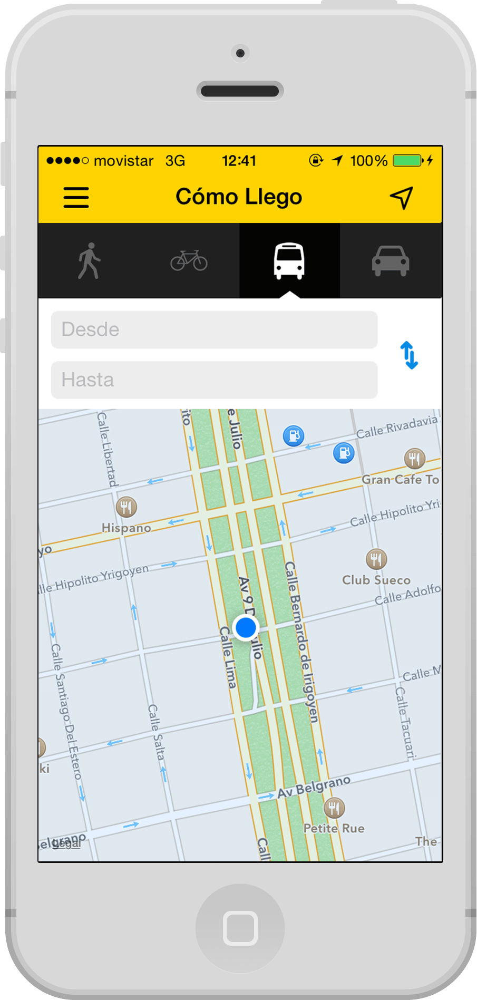

Pixelfucker from Buenos Aires, Argentina. Currently working for Buenos Aires City Government.
Contact mePopcorn Time is a multi-platform open source media player. The program is intended as a free alternative to subscription-based video streaming services such as Netflix. The program streams films directly from YTS and other torrents.
The program quickly received positive media attention, with some comparing it to Netflix due to its ease of use. Popcorn Time was taken down by its original developers on March 14, 2014. The Popcorn Time project was subsequently taken over by other developers.
I was the creator & designer. I brought together all the technological requirements while working with a team of top designers and developers I recruited using Twitter and Facebook.
What happens when the service that Google Maps offers for your city isn’t good enough? The Buenos Aires City Government came across this problem and therefore created its own map. The new city map included improved public transport routes and added extra functionality of walking, cycling and car routes. In addition, the map leverages official local data to provide cadastral information on each corner of the City.
My role in the project was the whole redesign: from thinking a new and modern UI in keeping with the Government Map, to implement it in the markup using a framework called BAstrap, which I created from zero, based on Bootstrap. I also had to design new functionalities and work on UX and user interaction with the map.
The main challenge was to simplify access to all the features for the user profiles, from those who want to know how to get from point A to B, to the more advanced users such as architects and urban planners, who need more specific information.
Taringa is a Social Network that provides a platform for people around the world to create content and share information and experiences. The spirit of Taringa is to be free, democratic and open, giving millions of people a means to enable them to express themselves without intermediaries or censorship.
Taringa has more than 75 million visitors each month, and is in the process of international expansion. In December 2013, Taringa became the largest Social network created in Latin America and second in traffic only after Facebook.
I refreshed the entire design and experience, after working with on small changes over the years I had the chance to redesign the entire site and build a framework for future designers.
This major change resulted in quadrupling the registered users per day, trebled the AdSense income and cut the server load by a third. The site was faster, easy to use and more mentionable. I also participated in the process of choosing new features that would affect 8 million users per day.
BA ComoLlego
2013 - 2014
Overview
ComoLlego is a mobile version of Mapa de la Ciudad, it’s now in its 3rd version. Focused on searching from point to point, this app provides simplified search results to help the user navigate with ease.
What I did
I designed the whole experience and UI with only one developer to produce the application, from wireframes to the final design. It was my first native App and the work that I’m most proud of because we solved real problems for everyday people.